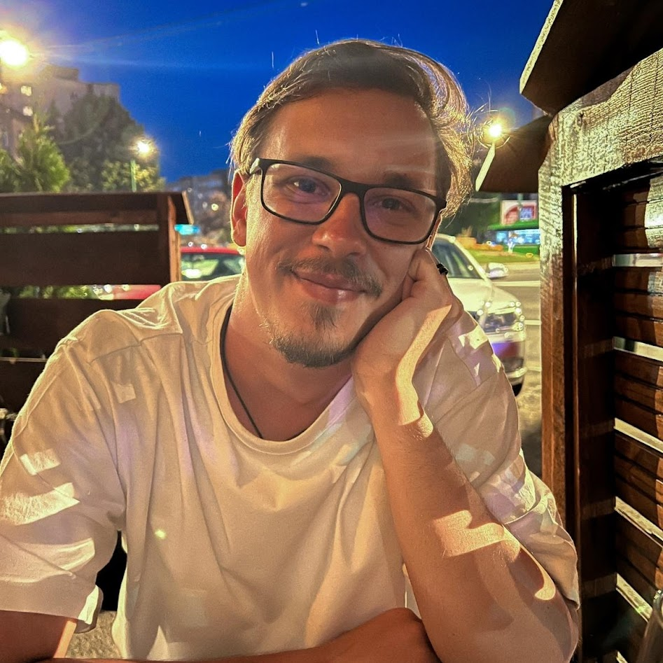

Resume

Contact details
About me
I am a psychology graduate looking for a career change.
With a keen interest in the tech field and programming, I am eager to develop new s
kills as well as strengthening my already existing ones.
Thanks to my previous volunteering and work experiences, I was able to
grow as a person and develop skills that will help in various situations.
Education
Babeș-Bolyai University
Bachelor`s degree in Psychology
2017-2020
Work experiences
Endava
Service Desk Analyst
30/01/2022 - Present
- Working in a highly dynamic environment.
- Troubleshooting and solving issues on the Microsoft Office applications.
- Managing accounts in Microsoft Azure Active Directory
- Managing accounts in Windows Server 2012 Active Directory
- Processing tickets in Service now
- Managing accounts in CITRIX Active Directory
- Further honed time management and communication skills.
- Developed high problem solving and adaptability skills
- Attended School of Linux March edition in 2023- acquired basic knowledge of Linux in Oracle VM VirtualBox and PuTTY
Volunteer Experience
ASPR - Romanian Association of psychology students
Teambuilding Coordinator
12/09/2019 - 24/11/2019
- Recruiting of the team members.
- Supervising the project team.
- Formulating the activities program with the team.
- Leading and moderating the team meetings.
- Developed high time management, communication and leadership skills.
Member of Human Resources department
06/11/2017 - 09/2020
- Growing and maintaining the motivation levels of the association members.
- HR consultant for the other departments.
- Member of Teambuilding team (2017,2018) and Teambonding team (2017,2018,2019).
- Member in the Recruitment project (2018).
- Member in the Annual Volunteering Gala (2018).
Skills
- Quick learning
- Communication
- Problem Solving
- Team leading
- Time Management
- Critical Thinking
- Flexibility
- Adaptability
- Creative Thinking
- Debrief
- Feedback
- Organized
- Research
- Linux VM
Hobbies